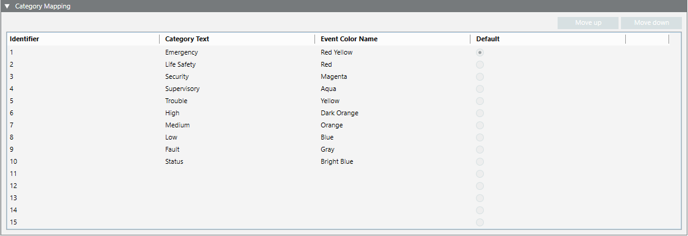

Category Mapping of a Schema
In Engineering mode, when you select an event schema, the Event Schema tab provides a Category Mapping expander which lists the categories and associated event colors defined in this schema. A maximum of 15 event categories can be defined.

Each row in the expander defines mapping as follows:
- Identifier: Number indicating the category’s event lamp position in the Summary bar, from left to right (1 denotes the leftmost lamp).
- Category Text: Name of this event category, selectable from a drop-down list. The available categories are those defined by Headquarter in the corresponding text group.
- Event Color Name: Color that will be associated to this event category, selectable from a drop-down list. The available colors are all those defined in the system libraries, including any custom colors you configured (see Configuring Event Colors in a Library).
- Default: Sets which category will be applied to any events that are not mapped to a category in the Event Mapping expander (see below). This setting can be applied to only one category.
- Move up, Move down: Buttons for rearranging the order of the event lamps in the Summary bar.
For instructions, see Define the Category and Event Mapping of a Schema.

The category mapping of an event schema under L1-Headquarter > Global > Events is a basic configuration provided by Headquarter and can be modified by Headquarter experts and Technical Support only.
Depending on their allowed customization level, authorized experts can modify the category mapping for event schemas defined at L2-Region, L3-Country, or L4-Project level.